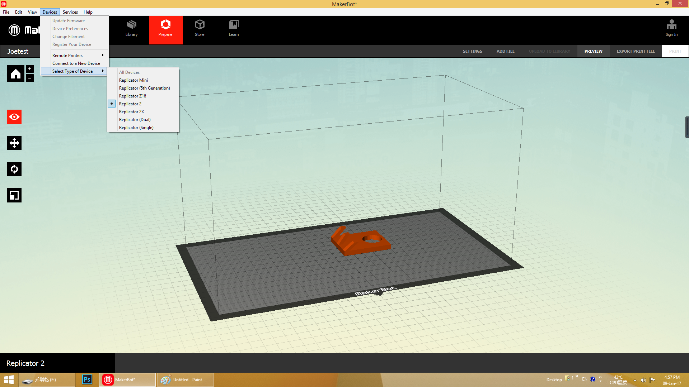
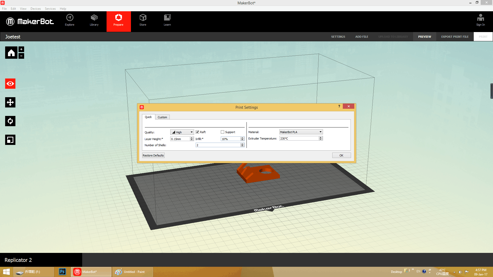
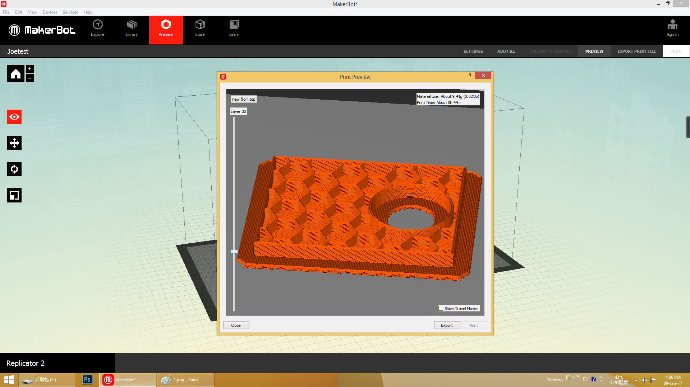
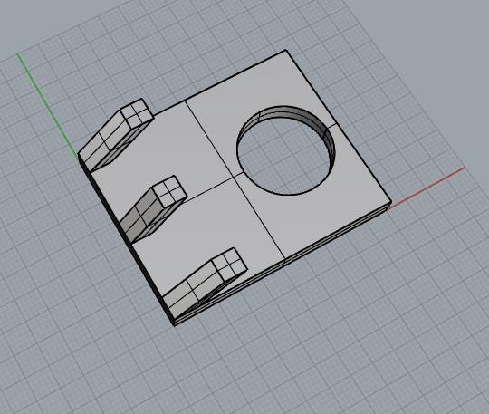
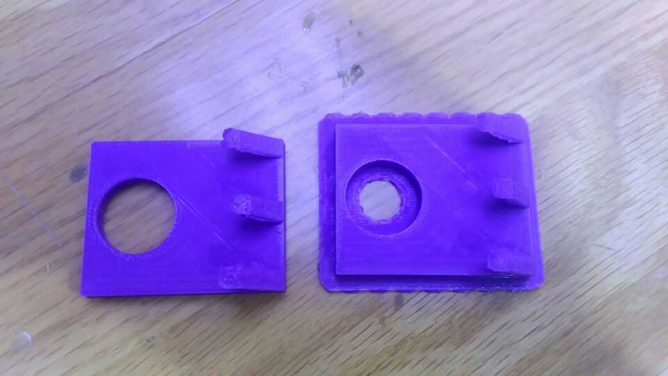
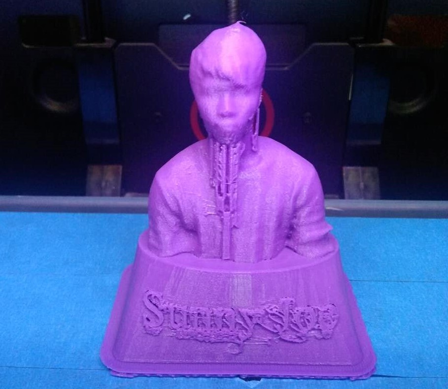
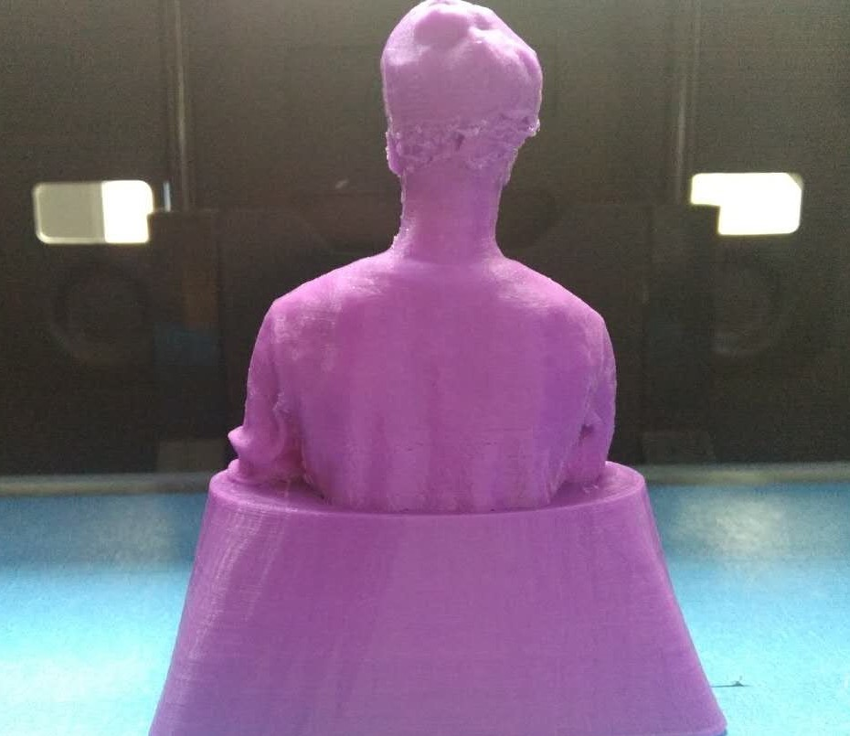

Today,we hace learned there are several kinds of the 3D printing,such as SLA,DPL,SLS,FDM and ProJet.Their forming principle and material are different.The most commonly used printer is FDM,It means fuse deposition moulding,PLA is a good material for it.Then I designed a text model to 3D printed.Let's go to see what I have done.
First of all we need to have a document to be printed,I designed the text.stl to test the machine with use the rhino software.It's a rectangular 40*50mm,the other side is a 20mm diameter hole, and then I drawed three columns which have different tilt angles to measure the printer, and find the appropriate angle when it is printed on the inclined column.
My text model:
We used the Makerbot Replicator2 to print our models, you need to use its proprietary slicing software Makerbot Desktop slice it layers and layers.We need to chosen model name of your printer,and set up the hight of layer,speed,tempreture and fill. These settings will affect your print quality and time.


After that we can print preview, then make sure there is no problem to save the file to X3G format,the file format of this printer is exclusive, normally it can be saved as Gcode file into the printer to print.
We have stored files transferred to the SD card,need to pay attention to is that we can use the data line directly to the computer connected with the printer ,but the risk is that if the data line accidentally disconnected,the printer will stop working,so we adopt off-line printing way.We select the file in the SD card and start printing.The printer would work when the temperature reaches the set temperature.There is a problem, that the print head is too close to the print platform so that the material can't be extruded with a noise "thump".The model is very difficult to take down. So we adjust the height of the platform to solve this problem, adjust four point of the platform and print head keep a distance of the thickness of a piece of paper, it can feel sense of resistance when we pull the piece of paper. Print my test again, the first layer can be released and easier to take down.
The measurement of test size:length of 50mm measured an average of 49.8mm, up to 50.02mm,length of 40mm measured an average of 39.8mm, up to 40.03mm, circle of 20mm measured the diameter of 19.6mm, up to 19.65mm.
Designed model
Printed model
Defect of Supports
Defect of Head
This is my text model.
Please click here.